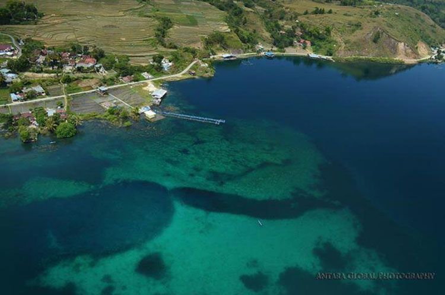

Lumban Silintong

Tempat wisata yang menarik di Sumatera Utara. Terletak di Balige, Tobasa. Tepi laut ini mempunyai ombak yang tidak sangat kokoh, sehingga rata- rata wisatawan turis yang berkunjung sangat cocok buat kegiatan berenang dengan nyaman di air. Salah satu energi tarik dari tepi laut ini merupakan kafe terapung, inilah membuat tepi laut ini berbeda dari tepi laut yang terdapat di balige maupun di parapat. Kafe Terapung menawarkan sebagian santapan serta minuman dengan harga yang murah. Terlebih Kamu dapat menikmati santapan sembari melihat keelokan danau. Tepi laut Lumban Silintong terletak di Balige, Cuma 20 menit dari pusat kota Balige. Dari lapangan terbang Silangit, cuma diperlukan dekat 1- 2 jam buat menggapai Tepi laut Lumban Silintong. So buat kalian yang perlu list liburan di Balige. Tepi laut ini dapat jadi catatan liburan mu di akhir minggu.